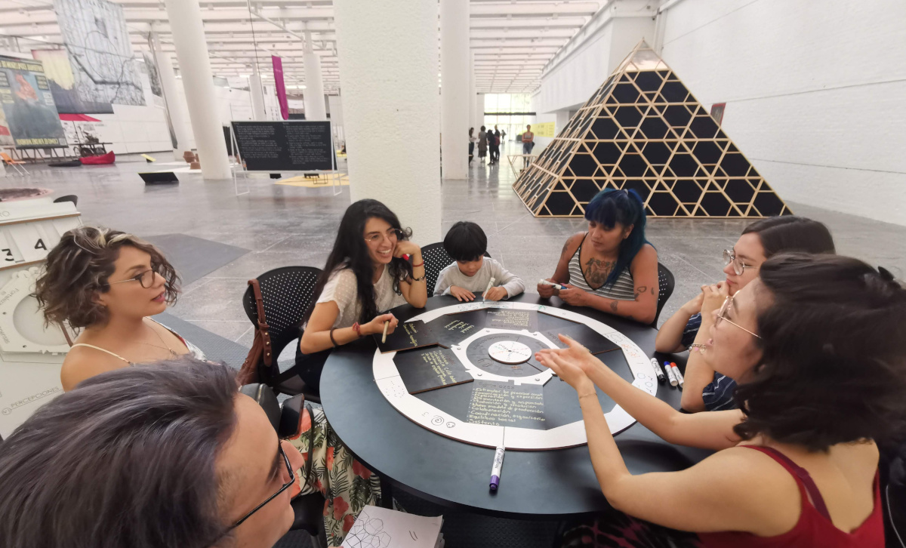

Futuroscopio is the third iteration of a project intended to sharpen critical thinking by playful interactions that enable foreseing alternative futures. It is the result of our collective interest to open dialogue in between disciplines, such as Design, Future Thinking, Arts and Digital Technology.
We do this by playing, as we see games as vehicles easy to ride, able to socialise knowledge, address complexity, and distribute joy and excitement among wide audiences.
